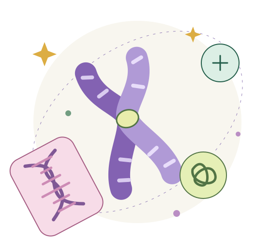

Disponible · Actividad 01
ADN y cromosomas
De un hilo de información a un cromosoma listo para repartir sus copias. Descubre las conexiones, juega con las ideas y comprueba lo aprendido.
Entrar al laboratorioKENISA · Tu laboratorio de biología
La vida continúa.
¿Cómo se copia su información?
Entra al núcleo, sigue la pista del ADN y descubre cómo una célula prepara y reparte sus copias.
Comenzar actividad 01
Tu recorrido
Las cuatro actividades están listas. Explora a tu ritmo y cierra con un repaso que conecta toda la sesión.
De un hilo de información a un cromosoma listo para repartir sus copias. Descubre las conexiones, juega con las ideas y comprueba lo aprendido.
Entrar al laboratorio
Sigue una célula en movimiento: los cromosomas se alinean, las copias se separan y aparecen dos células hijas. Observa, ordena y reconoce cada fase.
Explorar la mitosis
Dos divisiones, la mitad de los juegos y nuevas combinaciones. Sigue a los homólogos, explora el entrecruzamiento y encuentra el camino hasta cuatro células haploides.
Explorar la meiosis
Conservar, reducir y reunir. Compara los dos repartos, conecta gametos y cigoto, y construye el ciclo de una nueva vida.
Conectar toda la historiaA tu ritmo, con curiosidad
Recorre los dibujos y cambia sus estados para entender qué está pasando.
Identifica, compara y vuelve a intentarlo. Cada respuesta te da una pista.
Cierra con un repaso y vuelve a las ideas que todavía necesites conectar.